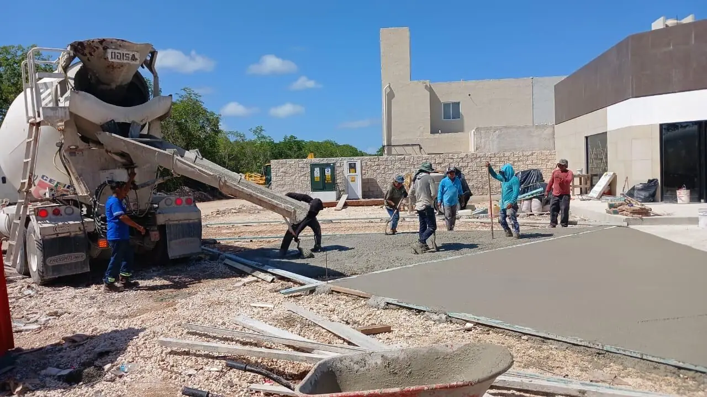

We build private roads, subdivision streets, access roads and yards in Akumal as one package, from survey and earthworks to pavement, drainage and signage. Akumal needs private roads and car parks for condos, villas and hotels on the bays, access roads to Jade Bay and Akumal Norte, and repair of sascab and old asphalt roads damaged by heavy rain.

Topography, geotechnical study and pavement design for the real traffic, from cars to 40-tonne trucks.
Line marking, traffic signs, speed humps, reflective studs and street lighting conduits.
Streets for gated communities and lot developments with kerbs, sidewalks, storm drainage and conduits for services.
The coast is sand over limestone with an extensive cave and cenote system under the area, so probing along road alignments is not optional, and heavy fills are avoided where caves are close to the surface. The pavement design and the base thickness are set for these conditions after the soil study, not copied from another site.
Akumal belongs to Tulum municipality; the bays are environmentally sensitive, turtle and coral protections apply, and several areas are private or ejido land where access agreements must be settled before roadworks. We map these approvals during design so that construction starts with every connection and clearing authorised.
Runoff from roads drains straight into the aquifer and the bays, so oil interceptors, sediment traps and permeable surfaces protect the water; infiltration wells must avoid known cave passages.
Akumal is about 35 minutes from our yard; hot mix comes a long way from the north, so for small private roads concrete, pavers or stabilised sascab are often more practical than asphalt.
| Road type | Structure | Price (MXN/m²) |
|---|---|---|
| Unpaved access road | Sascab sub-base + crushed-stone wearing course | $330–$610 |
| Asphalt road, light traffic | Sub-base + base + prime + 5 cm hot mix | $880–$1,500 |
| Asphalt road, heavy traffic | Thicker base + 7–10 cm hot mix | $1,300–$2,100 |
| Concrete road | Base + 15–20 cm hydraulic concrete | $1,200–$1,900 |
Useful pages: Road Construction — Riviera Maya · Asphalt Paving in Akumal · Concrete & Pavers in Akumal · Parking Lots in Akumal
Design, earthworks, base, pavement and drainage under one fixed price per m². Reply in 2 minutes.
Quote on WhatsAppFideicomiso: how foreigners own coastal property · Buying land in Mexico: due diligence · Concierge construction service · Managing a build from abroad · Build or buy in Playa del Carmen? · How long a build takes in Mexico · Contractor stopped? Finishing a stalled build · Closing on property: process and costs · Where to build: area by area · Cost to build a house in Mexico · Land use, COS and CUS · Soils studies on limestone
Your review helps other owners decide, and helps us improve.
Write a reviewRead our Google reviews